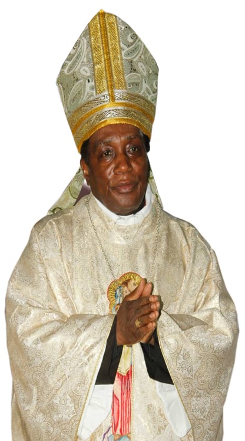

DIOCESE DE NKONGSAMBA
Accueil
Accueil
Ordinaire
Notre Evêque
Messages Evêque/Blogs
Amoirie
Rendez-vous
Paroisses
Nos Paroisses
Profile
Histoire de Diocèse
Curie Diocesaine
Doyens de Zones
Vicairs Episcopaux
Conseil Presbytéral
Conseil Episcopal
Conseil: affaires Economique
Conseil: affaires juridiques
Conseil Pastoral
Institutions
Les Congrégations Religieuses
Dieu au Présent
Institutions Pastorales/Vocationales
Aûmoneries
Ecôles/Education
Service de la santé
Apostolat de Laics
Personnel
Prêtres Diocésains
En Mission-Special
Pêtres aux etudes
Prêtres Religieux
Deceased Indigenous Priests
Seminaristes
Catechistes
Others
Doctrines & Morales
Pastorale des familles
Droits et Responsabilités civiques
Bureau Liturgique
La Spiritualité
Enseignement Biblique
General Issues
Information
Notre Contact
Calendrier Liturgique
Collectes & Dons
Projects En cours
Hebdomadair Diocesain
Maison d'Accueil
Nouvelles & Evenements
Evenements à venir
Gallarie Photos
Diocèse de Nkongsamba
AUMÔNERIES DIOCESAINS
A. MILITAIRE
B. MILITAIRE
Abbé Augustin HITIKETIK
ZONE DE NKONGSAMBA
Mgr Joseph TCHINDA DUNTIO
ZONES DES SANTCHOU ET MELONG
Abbé Jean Rubin BINDOUMI
ZONES DES MANJO ET LOUM
Abbé Donatien FOTSI
ZONES DES MBANGA ET SOUZA
Abbé Marc Désiré MOUAHA
CONSEIL DIOCÉSAIN DES LAÏCS (CDL)
FEMMES CATHOLIQUES
Abbé Joseph Antoine PEPKA
Mgr Joseph TCHINDA
DAMES APOSTOLIQUES
HOMMES CATHOLIQUES
Abbé Guy Gaspard TIKI
Animatrice
Sr Marie Françoise SADZI TAKEM
Ab. Maurice MONGOUANA
EQUIPE NOTRE DAME
SANTÉ DIOCESAINE
Bertrand NGALEU
Abbé Paul Barnabé NKOLO
CONFRÉRIE DU SACRÉ-COEUR
ASSOCIATION SAINTE MARIE (Ekoan Maria)
Père Innocent YOMI
Abbé Gustave TOKO
LÉGION DE MARIE
FOCOLARI / PRISON
Abbé Anthony WAMO
Abbé Laurent NGALLA
Père Martin HAMAN VONDOU
FOI ET LUMIÈRE
RENOUVEAU CHARISMATIQUE
Abbé Bertrand NGALEU
Abbé Augustin HITIKETIK
ENFANCE / ACE Cop' MONDE
JEUNESSE
Abbé Anthony WAMO
Conseillère ACE Cop' Monde
Sr Eliane NOUBISSIE
Abbé François Ledoux SIEKAPE
INSTITUT SÉCULIER CVR
MISÉRICORDE DIVINE
Abbé Léopold EKADJOUE
Abbé Longin Florian ENGOLO
FRÈRES OBLATS DE NYABANG
FRAT. STE THÉRÈSE DE L'ENFANT JÉSUS ET DE LA SAINTE FACE
Abbé Guy Gaspard TIKI
Abbé Yannick TIODI
COMMERÇANTS BAYAM SELLAM
BENSIKINNEURS
Abbé Augustin HITIKETIK
Abbé Georges EKANGO EPOH
PASTORALE FAMILIALE
CONFRÉRIE DU ROSAIRE
Abbé Eugène NGUIDJO
Abbé Vincent De Paul TEUMA
AUTORITÉS PUBLIQUES
MONTLIGEON
Abbé Donatien FOTSI
Abbé Pascal DJEUGA
ÉLITES
MONDE AGRICOLE
Abbé Michel NDJEUTA
Abbé Marc MOUKAM
CHORALES
HÔPITAL RÉGIONAL
Abbé Bertrand NGALEU
Abbé Florent KANA MOLI